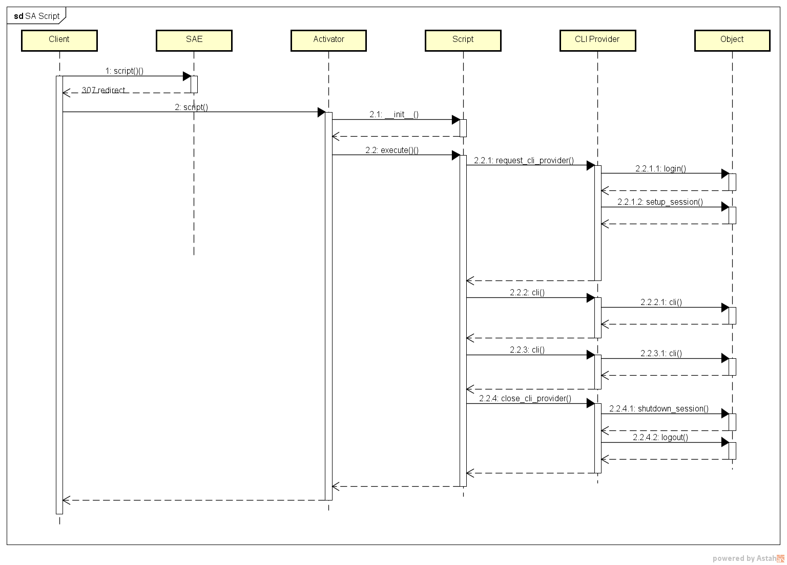

Профили Oборудования¶
Взаимодействие с устройствами в NOC'е строится через профили (SA Profile).
Можно описать Профиль SA (SA Profile) как посредника (адаптер).
Он принимает необработанный поток данных от оборудования и преобразует его в данные, которые передаются NOC'у для последующей обработки системой.
Профили жёстко привязаны к используемому на оборудовании программному обеспечению.
Внутри профиля можно проверять версию ПО и модель, но это усложняет код скриптов, по этой причине профили совместимы между собой в рамках одной ОС производителя.
Например, для Cisco IOS и Cisco ASA используются разные профили.
Note
Профиль SA (SA Profile) - это компонент NOC'а, скрывающий от остальной системы особенности взаимодействия с оборудованием.
Можно выделить следующие особенности профилей:
- Пишутся на языке программирования Python
- Подгружаются автоматически, при старте системы (для применения обновлений необходим перезапуск системы)
- Нет ограничений на использование каких-либо модулей
Python - Обязательным является скрипт
get_version, остальные добавляются в зависимости от возможностей оборудования - Собранные данные живут в рамах одной сессии
Структура и взаимодействие с системой¶
Состав профиля¶
Профили расположены в директории sa/profiles.
По соглашению имя профиля строится из названия производителя VendorName и имени ОС OSName: Juniper.JUNOS, Cisco.IOS.
<noc_base>/sa/profiles/
├── <VendorName>
│ ├── __init__.py
│ ├── <OSName>
│ │ ├── __init__.py
│ │ ├── profile.py
│ │ ├── confdb
│ │ │ ├── __init__.py
│ │ │ └── normalizer.py
│ │ ├── middleware/
│ │ │ ├── __init__.py
│ │ │ └── ...
│ │ ├── get_version.py
│ │ ├── get_vlans.py
│ │ ├── ...
│ │ └── snmp_metrics
│ │ ├── cpu_usage_1min.json
│ │ └── ...
Note
Имена являются регистрозависимыми!
Сам профиль состоит из:
profile.py- Класс реализует настройки работы с оборудованием, наследуется отnoc.core.profile.base.BaseProfile- Набор скриптов, реализующих один из доступных интерфейсов SA (
SA Interface) snmp_metrics/- папка с перечнемSNMP OIDдля скриптовconfdb/- папка с парсерами конфигурации для ConfDBmiddleware/- папка для обработчиковHTTPзапросов к оборудованию
Note
Интерфейс SA (SA Interface) описывает формат и состав данных, которые необходимо передать в сторону NOC'а.
Взаимодействие с NOC'ом¶
Взаимодействие с НОКом стоится на вызове скриптов профиля из других компонентов системы: discovery,
полученная информация используется для сбора информации об оборудовании. Возвращаемая скриптом информация должна соответствовать заявленному интерфейсу (SA Interface).
В самой системе профили назначаются устройству (ManagedObject по этой причине нет необходимости явно указывать вызываемый профиль, он берётся из настроек.
Схема вызова выглядит следующим образом:

-
Вызов скрипта для устройства
ManagedObject. Пример вызова скриптаget_version:from noc.core.mongo.connection import connect connect() from noc.sa.models.managedobject import ManagedObject mo = ManagedObject.objects.get(name="<MONAME>") r = mo.scripts.get_version() r {'vendor': 'Huawei', 'platform': 'S2326TP-EI', 'version': '5.70 (V100R006C05)', 'image': 'V100R006C05', 'attributes': {'Serial Number': '21', 'Patch Version': 'V100R006SPH031'}} -
После вызова система делает
RPCзапрос к сервису SAE для получения параметров вызова скрипта:- Учётные данные оборудования (пользователь, пароль, Community)
- Возможности (
Capabilities) - Настройки работы профиля (Access Policy)
-
SAE отвечает кодом переадресации на подходящий активатор Activator
- Активатор создаёт сессию и запускает на исполнение вызываемый скрипт с переданными параметрами.
- Если в скрипте реализованы методы
execute_cliилиexecute_snmp, то их вызов происходит согласно приоритетам. При наличии методаexecuteвсегда запускается он. - Результаты работы скрипта проверяются интерфейсом и возвращаются вызвавшему
- Если при выполнении произошла ошибка, то возвращается её код
Интерфейсы SA¶
Для передачи результатов применяются интерфейсы SA.
:term:`Интерфейс SA` - это специальная сущность NOC'а, предназначенная для обеспечение взаимодействия между компонентами.
Интерфейсы SA расположены в директории sa/interfaces. Они доступны для указания скриптов профиля.
Есть возможность определять собственные интерфейсы через Custom
В Интерфейсе SA описывается структура данных передаваемая и возвращаемая скриптом. Передаваемая - это параметры скрипта, а возвращаемая, результат работы. Описывается:
- Имена полей
- Тип данных
- Значения по умолчанию
- Обязательность поля
Если данные не прошли проверку поднимется исключение. В качестве примера возьмём интерфейс noc.sa.interfaces.igetversion.IGetVersion
::: noc.sa.interfaces.igetversion:IGetVersion selection: docstring_style: restructured-text members: true rendering: heading_level: 4 show_source: true show_root_heading: true show_if_no_docstring: true show_signature_annotations: true
Описание достаточно наглядно показывает какой результат ожидать от скрипта.
В данном случае, для успешной передачи нам необходимо сформировать словарь (dict) с ключами:
vendor- текстовое полеStringParameter()version- текстовое полеStringParameter()platform- текстовое полеStringParameter()attributes(необязательный параметр) - Словарь, при этом список ключей не ограничен. Это означает, что разработчик может самостоятельно выбрать что в нём передавать.
Итог выглядит как-то так:
{
"vendor": "Cisco",
"version": "12.4(5)",
"platform": "IOS",
"attributes":
{
"image": "image.bin",
"type": "type1",
"count": 2
}
}
Через консоль разработчика можно проверять данные:
r = {
"vendor": "Cisco",
"version": "12.4(5)",
"platform": "IOS",
"attributes":
{
"image": "image.bin",
"type": "type1",
"count": 2
}
}
from noc.sa.interfaces.igetversion import IGetVersion
IGetVersion().clean_result(r)
{'vendor': 'Cisco',
'version': '12.4(5)',
'platform': 'IOS',
'attributes': {'image': 'image.bin', 'type': 'type1', 'count': 2}}
Настройки взаимодействия с оборудованием¶
Note
До версии 19.1 настройки находились в файле __init__.py
Настройки взаимодействия с оборудованием сосредоточены в файле profile.py профиля.
Большинство настроек описаны в базовом классе - noc.core.profile.base и доступны для переопределения в классе профиля. Они включают в себя следующие группы:
- Имя профиля. Должно совпадать со структурой -
cisco/ios-Cisco.IOS - Настройки работы с
CLI. Методы и аттрибуты, описывающие работу сCLI pattern_prompt- строка приглашения на оборудовании.pattern_syntax_error- список строк ошибок команды (при совпадении поднимается исключениеCLISyntaxError)command_more- команда (или клавиша), которую необходимо передать оборудованию для продолжения постраничного вывода (deprecatedвместо него используетсяpattern_more)command_disable_pager- команда для отключения постраничного вывода информацииcommand_enter_config- команда для входа в режим настройкиcommand_leave_config- команда для выхода из режима настройкиcommand_save_config- команда для сохранения конфигурацииcommand_exit- команда для завершения сеансаCLIrogue_chars- список символов, для фильтрации из вывода команды- Настройки работы с
SNMP snmp_metrics_get_chunk- размерSNMPзапроса метрикsnmp_metrics_get_timeout- таймаут при запросеSNMP- Методы нормализация выводимых данных
convert_interface_name- нормализует имя интерфейса, на вход получает имя интерфейса как оно может быть представлено на оборудовании, на выходе имя интерфейса в системеget_interface_type- позволяет по имени интерфейса получить его типconfig_volatile- список строк в конфигурации, которые необходимо отфильтровать из него при сборе. Обычно используется, чтобы исключить строки, которые могут меняться в конфигурации (например изменение времени).- Матчеры (
Matchers) - выставляют аттрибут скрипта при совпадении условий (версия ПО, платформа). Используются для выполнения различных команд в зависимости от версии ПО/модели - Настройки парсеров
ConfDB: config_tokenizer- применяемый токенизатор Tokenizerconfig_normalizer- применяемый нормализатор Normalizerconfig_applicators- список аппликаторов Applicators
Пример файла профиля profile.py:
from noc.core.profile.base import BaseProfile
import re
class Profile(BaseProfile):
name = "Huawei.VRP"
pattern_more = [
(r"^ ---- More ----", " "),
(r"[Cc]ontinue?\S+", "y\n\r"),
(r"[Cc]onfirm?\S+", "y\n\r"),
(r" [Aa]re you sure?\S+", "y\n\r"),
(r"^Delete flash:", "y\n\r"),
(r"^Squeeze flash:", "y\n\r")
]
pattern_prompt = r"^[<#\[](?P<hostname>[a-zA-Z0-9-_\.\[/`\s]+)(?:-[a-zA-Z0-9/]+)*[>#\]]"
pattern_syntax_error = r"(Error: |% Wrong parameter found at|% Unrecognized command found at|Error:Too many parameters found|% Too many parameters found at|% Ambiguous command found at)"
command_more = " "
config_volatile = ["^%.*?$"]
command_disable_pager = "screen-length 0 temporary"
command_enter_config = "system-view"
command_leave_config = "return"
command_save_config = "save"
command_exit = "quit"
rogue_chars = [
re.compile(rb"\x1b\[42D\s+\x1b\[42D")
]
matchers = {
"is_kernel_3": {"version": {"$gte": "3.0", "$lt": "5.0"}},
"is_kernelgte_5": {"version": {"$gte": "5.0"}},
"is_bad_platform": {
"version": {"$regex": r"5.20.+"},
"platform": {"$in": ["S5628F", "S5628F-HI"]},
}}
config_tokenizer = "indent"
config_normalizer = "VRPNormalizer"
confdb_defaults = [
("hints", "interfaces", "defaults", "admin-status", True),
("hints", "protocols", "lldp", "status", True),
]
config_applicators = ["noc.core.confdb.applicator.collapsetagged.CollapseTaggedApplicator"]
def generate_prefix_list(self, name, pl, strict=True):
...
def convert_interface_name(self, s):
...
Полный список доступных методов доступен в базовом классе профиля - noc.core.profile.base.BaseProfile
Скрипты¶
Полное описание работы скриптов доступно в Scripts Reference. В разделе мы посмотрим взаимоувязку работы скриптов в профиле.
Самым полезным компонентом профиля является скрипт. Скрипты выполняют всю полезную работу по взаимодействию с оборудованием.
Скрипт представляет собой файл (модуль Python) реализующий один интерфейс (SA Interface). Наследуется от класса noc.core.script.base.BaseScript
и реализует метод execute(), вызываемый при запуске. Основные компоненты скрипта:
name- имя скрипта. Строится по шаблону:<profile_name>.<script_name>interface- ссылка на класс реализуемого интерфейсаexecute_snmp()- вызывается если приоритет исполнения (access_preference) выставлен вSNMPexecute_cli()- вызывается если приоритет исполнения (access_preference) выставлен вCLIexecute()- вызывается при начале выполнения
Note
Как и профиль, скрипты считываются при старте NOC'а и кэшируется. Поэтому, для того чтобы, NOC восприняла изменения необходим перезапуск. Правило не распространяется на отладку через ./noc script
Обязательным является скрипт get_version, через него получается базовая информация об оборудовании: производитель, версия ПО, модель.
Второй по важности скрипт - get_capabilities через него определяется поддержка устройством различных протоколов (SNMP) и технологий.
Note
В работе скриптов get_version и get_capabilities запрещено использовать вызов других скриптов, иначе может получиться циклическая зависимость.
Для того чтобы вызвать из скрипта метод профиля (SA Profile) применяется конструкция self.profile.<method_name()
Отладка¶
Для отладки профиля используется инструмент ./noc script. Он позволяет запускать скрипты из профиля в режиме отладки. Делается это следующим образом:
./noc script --debug <имя_скрипта> <имя_объекта> <параметры>, где
<имя_скрипта>- полное имя скрипта (в формате <папка1>.<папка2>.<имя_скрипта><имя_объекта>- имя Объекта (из меню Объекты -> Список объектов)<параметры>- параметры (не обязательно, только если используются)
Для удобства, параметры, можно передавать в файле формата JSON, это не требует добавление объекта в систему.
./noc script --debug <имя_скрипта> <путь_к_файлу_json>
Базовый класс профиля¶
::: noc.core.profile.base:BaseProfile selection: docstring_style: restructured-text filters: - "!add_script_method" - "!initialize" - "!get_telnet_naws" - "!allow_cli_session" - "!send_backspaces" - "!get_config_tokenizer" - "!get_config_normalizer" - "!get_confdb_defaults" - "!iter_config_applicators" - "!iter_collators" - "!get_http_request_middleware" - "!get_snmp_display_hints" - "!get_snmp_response_parser" - "!has_confdb_support" - "!_get_patterns" - "!_get_rogue_chars_cleaners" - "!get_snmp_rate_limit" - "!cleaned_input" rendering: heading_level: 3 show_source: false show_category_heading: true show_root_toc_entry: false members_order: "source"